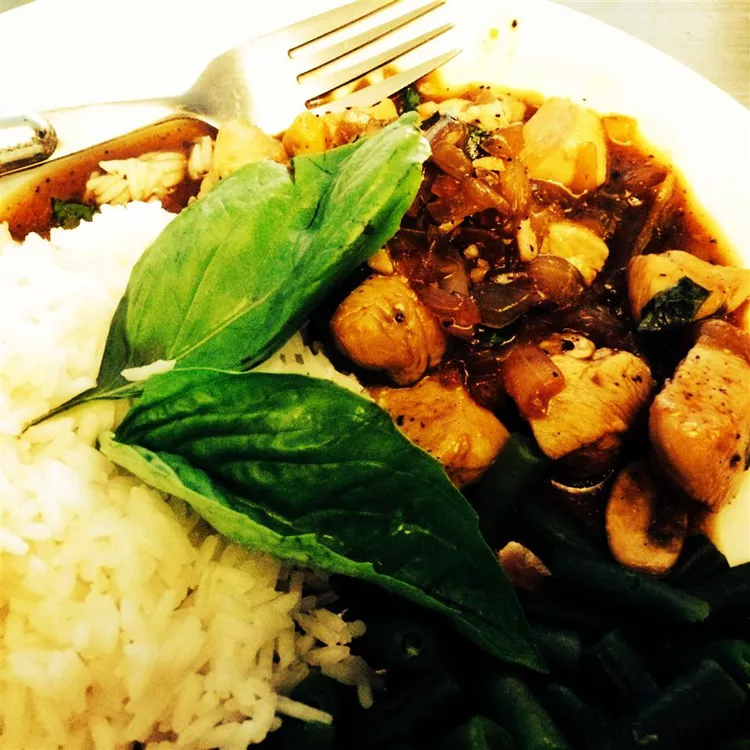

Spicy Chicken Basil

Description
This Spicy Basil Chicken offers an authentic taste of Thai food with simple ingredients and steps. Elevate a simple chicken breast to a delecious meal full of spice and flavor! Serve with rice and enjoy!
Adjust the spice level by reducing the chili peppers and oil to your taste.
Ingredients
- 2 tablespoons chili oil
- 2 cloves garlic
- 3 hot chile peppers
- 1 pound skinless, boneless chicken breast halves - cut into bite-sized pieces
- 1 1/2 teaspoons white sugar
- 1 teaspoon garlic salt
- 1 teaspoon black pepper
- 5 tablespoons oyster sauce
- 1 cup fresh mushrooms
- 1 cup chopped onions
- 1 bunch fresh basil leaves